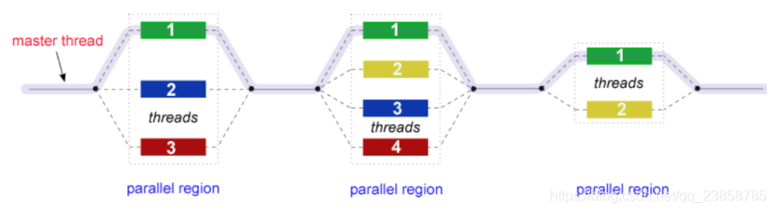
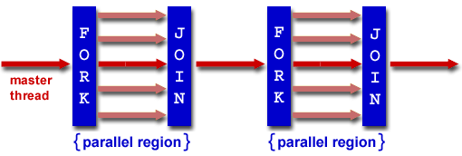
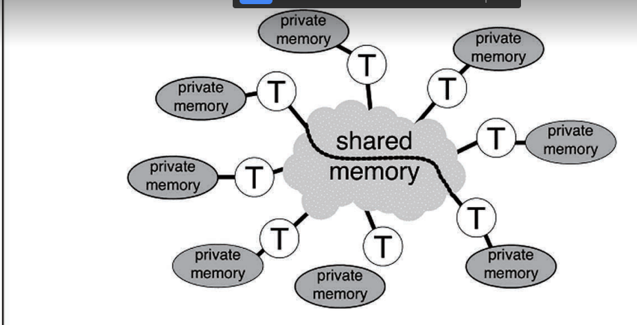

Introduction of OpenMP
Contents
1.1. Introduction of OpenMP#
In this section, we will first introduce what OpenMP is and some advantages of using OpenMP, and then we will introduce the execution model and memory model of OpenMP.
1.1.1. What is OpenMP?#
OpenMP is a standard parallel programming API for shared memory environments, written in C, C++, or FORTRAN. It consists of a set of compiler directives with a “lightweight” syntax, library routines, and environment variables that influence run-time behavior. OpenMP is governed by OpenMP Architecture Review Board (or OpenMP ARB), and is defined by several hardware and software vendors.
OpenMP behavior is directly dependent on the OpenMP implementation. Capabilities of this implementation can enable the programmer to separate the program into serial and parallel regions rather than just concurrently running threads, hides stack management, and provides synchronization of constructs. That being said OpenMP will not guarantee speedup, parallelize dependencies, or prevent data racing. Data racing, keeping track of dependencies, and working towards a speedup are all up to the programmer.
1.1.2. Why do we use OpenMP?#
OpenMP has received considerable attention in the past decade and is considered by many to be an ideal solution for parallel programming because it has unique advantages as a mainstream directive-based programming model.
First of all, OpenMP provides a cross-platform, cross-compiler solution. It supports lots of platforms such as Linux, macOS, and Windows. Mainstream compilers including GCC, LLVM/Clang, Intel Fortran, and C/C++ compilers provide OpenMP good support. Also, with the rapid development of OpenMP, many researchers and computer vendors are constantly exploring how to optimize the execution efficiency of OpenMP programs and continue to propose improvements for existing compilers or develop new compilers. What’s more. OpenMP is a standard specification, and all compilers that support it implement the same set of standards, and there are no portability issues.
Secondly, using OpenMP can be very convenient and flexible to modify the number of threads. To solve the scalability problem of the number of CPU cores. In the multi-core era, the number of threads needs to change according to the number of CPU cores. OpenMP has irreplaceable advantages in this regard.
Thirdly, using OpenMP to create threads is considered to be convenient and relatively easy because it does not require an entry function, the code within the same function can be decomposed into multiple threads for execution, and a for loop can be decomposed into multiple threads for execution. If OpenMP is not used, when the operating system API creates a thread, the code in a function needs to be manually disassembled into multiple thread entry functions.
To sum up, OpenMP has irreplaceable advantages in parallel programming. More and more new directives are being added to achieve more functions, and they are playing an important role on many different platforms.
1.1.3. OpenMP Fork-Join Excution Model#
The parallel model used by OpenMP is called the fork-join model, as shown in the following figure:  
Drwa a new figure, merge these 2 figures and shown the barrier in the new figure
All OpenMP programs start with a single thread which is the master thread. The master thread executes serially until it encounters the first parallel region. Parallel region is a block of code executed by all threads in a team simultaneously.
When the master thread encounters a parallel region, i.e. when it encounters an OpenMP parallel instruction, it creates a thread group consisting of itself and some additional (possibly zero) worker threads. This process called fork. These threads can execute tasks in parallel and are uniformly dispatched by the master thread. There is an implicit barrier at the end of the parallel region. When the thread has finished executing its task, it will wait at the barrier. When all threads have completed their tasks, the threads can leave the barrier. The master thread is left and continues to execute the serial code after the parallel region. This process called join.
Thread management is done by the runtime library, which maintains a pool of worker threads that can be used to work on parallel regions. It will allocate or reclaim the threads based on the OpenMP instructions and sometimes adjust the number of threads to allocate based on the availability of threads.
1.1.4. SPMD Program Models#
The program model in the parallel region is Single Program, Multiple Data (SPMD). Processor Elements (PE) execute the same program in parallel, but has its own data. Each PE uses a unique ID to access its portion of data and different PEs can follow different paths through the same code. Each PE knows its own ID, and while programming, we can use conditional statements to control one or more threads. The commonly used format to follow is
if(my_id ==x) { }
else{}
SPMD is by far the most commonly used pattern for structuring parallel programs. In addition to openmp, other common parallel programming languages, such as MPI that can be applied to distributed memory systems, and CUDA that can be applied to CPU+GPU heterogeneous systems, all adopt this model.
1.1.5. OpenMP Memory Model#
At the beginning of this part, we briefly introduce two common memory models, namely shared memory and distributed memory. Shared memory means that multiple cores share a single memory, while distributed memory means that each computing node (possibly one or more cores) has its own memory. General large computers combine distributed memory and shared memory models, that is, shared memory within each computing node and distributed memory between nodes.
OpenMP supports the shared memory model that reduces execution time by creating multithreading to distribute parallelizable loads to multiple physical computing cores. Before the support for heterogeneous computing in OpenMP 4.0, there was only one address space.
The following figure shows the OpenMP memory model.

Let’s introduce some features of this model. First, all threads have access to the same, globally shared memory.
Second,OpenMP programs have two different basic types of memory: private and shared. Variables can also be divided into private variables and public variables. The type of the variable can be defined using an explicit private clause, or it can be defined according to default rules. Although the default rules are clear, we still recommend programmers explicitly define the types of variables, because using default rules does not always meet our expectations, and many errors may occur because of the subtlety of default rules.
Private variables are stored in private memory that is specially allocated to each thread, and other threads cannot access or modify private variables. Access conflicts will never happen when accessing the private variables. Even if there are other variables with the same name in the program or variables with the same name for multiple threads, these variables will be stored in different locations and will not be confused. The specific mechanism will be explained in detail when introducing the private clause.
There are two differences between shared variables and private variables. The first is that shared variables are not allowed to share one name. Each variable is unique. Secondly, shared variables are stored in memory that all threads can access, and any thread can access shared variables at any time. The control of access conflicts is the responsibility of the user.
The other two features of this memory model are that data transfer is transparent to the programmer and synchronization takes olace, but it is mostly implicit.